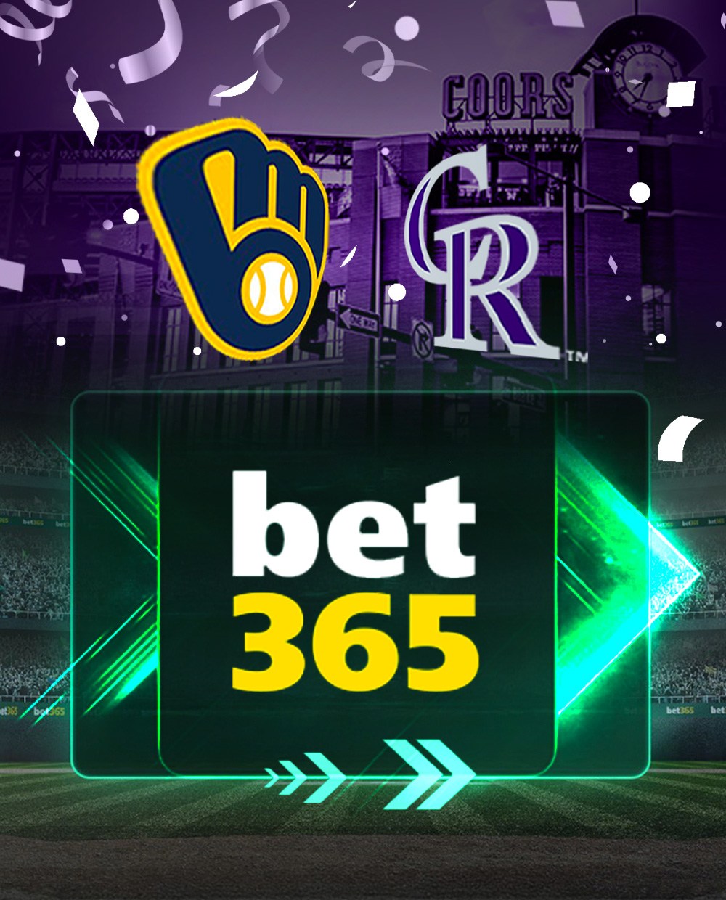
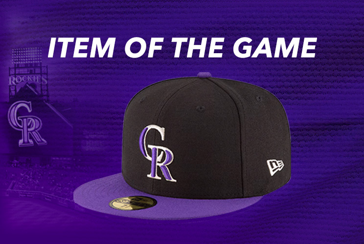
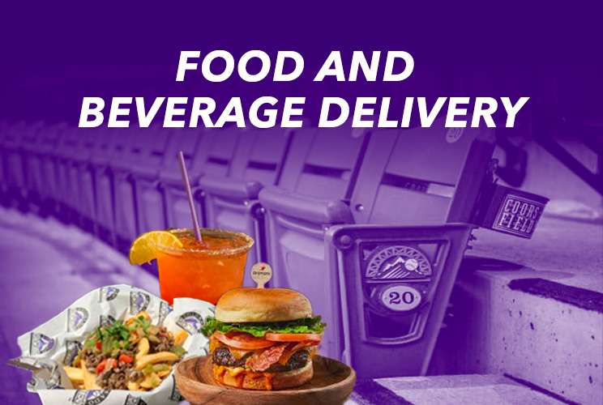
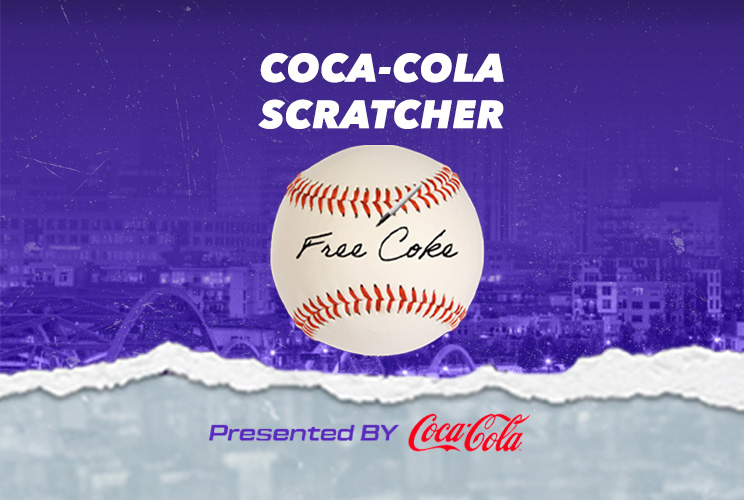
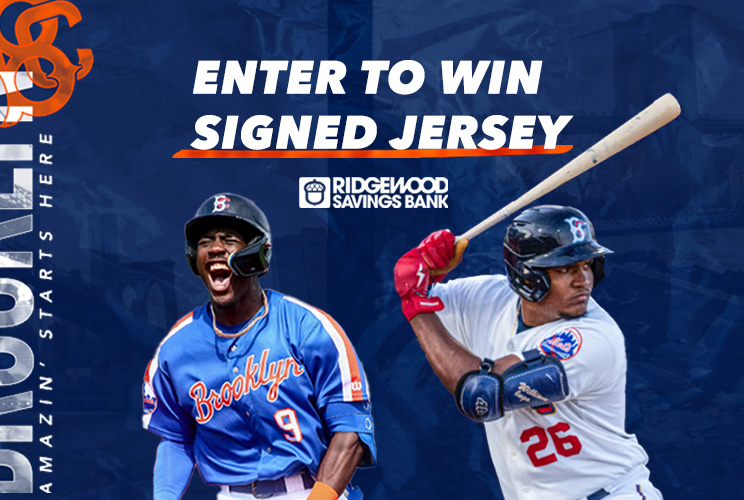

Photoshop Designs
Highlighted below are some of my favorite designs created in Photoshop, ranging from small to large builds. These designs were tailored for apps used in sporting and music events at the request of our clients. While browsing the organization's respective website, I gathered specific ideas tailored to their branding guidelines to create the module designs SOLUTIONS for their app. Hover over the image on desktop and press and hold the image on tablet and mobile devices to read about my process for creating each one.

I used two separate backgrounds for this design: an image of the
Crypto Arena and another displaying their color and hexagon logo. I added a layer mask to both
image layers and used the Gradient tool to blend the two images, with the blue hexagon image
blending more into the arena image. I then pasted in the Crypto.com logo as a separate layer and
used the Horizontal Type tool to write out the "Stadium Information".

The trophy picture served as the primary background image. Using the
Polygonal Lasso tool, I created a diagonal cut through the image, which I then filled with a
blue background. To enhance the separation, I used the Pen tool to create a 5px diagonal white
line. I placed a blue overlay over the track and field image, reducing the opacity of both
images to 95% to achieve a subtle blend, allowing the track image to softly show through the
blue overlay. I then added the NCAA championship logo as a separate layer and used the
Horizontal Type tool to write "LIVE RESULTS."

The celebratory picture displaying a hoisted trophy served as the
primary background image. Using the Polygonal Lasso tool, I created a diagonal cut through the
image, which I then filled with a blue background on the left side of the image to show some
variety from the live results image. To enhance the separation, I used the Pen tool to create a
5px diagonal white line. I placed a blue overlay over the track and field image, reducing the
opacity of both images to 95% to achieve a subtle blend, allowing the track image to softly show
through the blue overlay. I then added the NCAA championship logo as a separate layer and used
the Horizontal Type tool to write "EVENT SCHEDULE."

The red Olympic Trials design banner served as the primary background
image. I applied a layer mask to the image and used the Polygonal Lasso tool to create top and
bottom diagonal cuts, giving it an arrow-shape appearance that points towards the title, "LIVE
RESULTS." To enhance the separation, I used the Pen tool to create a 2px diagonal white line. I
then used the Horizontal Type tool to write "LIVE RESULTS."

The blue Olympic Trials design banner served as the primary background
image. I applied a layer mask to the image and used the Polygonal Lasso tool to create top and
bottom diagonal cuts, giving it an arrow-like appearance that points towards the title, "LIVE
RESULTS." The image of the medal initially didn't fit within the arrow shaped space due to its
narrow dark background. To fix this, I used the Rectangular Marquee tool and the content-aware
fill option to stretch the dark background, ensuring it met the parameters of the image cut. To
enhance the separation, I used the Pen tool to create a 2px diagonal white line. I then used the
Horizontal Type tool to write "MEDAL CEREMONY SCHEDULE."

The primary image used is of TD Gardens Arena, overlaid on a black
background that features the Boston Garden Society logo. The arena image was aligned to the left
to reveal the underlying black color. Text was added as a layer and positioned between 5px lines
drawn with the Pen tool.

The design features the Bruins' signature wallpaper from their website,
combined with another image that is black with white speckles, creating a dust-like effect. This
speckled image was overlaid on the patterned background with a reduced opacity of 79%. A layer
mask was applied to both images, and the Gradient tool was used to blend them together, allowing
the patterned background to peek out on both sides, adjacent to the yellow, black, and white
borders. The foundation logo was added as a separate layer, and the text "DONATIONS" was
included using the Horizontal Type tool. A solid black background was used as a base to ensure a
dark theme throughout the design.

The primary image of delighted fans was used as the background,
layered over a white background. Next, one of the Titans' team color, light blue, was applied
over the image. Using layer masks on both images, the Gradient tool was employed to gradually
blend the blue color vertically, covering about a fourth of the way up the fans' image. This
technique created a seamless blend of the two images. Under the Image tab, I selected
Adjustments and used the Desaturate feature to achieve an overall blended blue look,
representing one of their team colors. I then used the Horizontal Type tool to write "FAN
SURVEY" and incorporated the red line from their website as a separate layer, aligning it
underneath the text to match the Titans' color branding scheme.

The design features a split background of light and dark blue as the
base. To enhance the dark blue side, I added light blue brush stroke images for a more balanced
appearance. Three different merch item images representing the Titans' team name and colors were
cropped from the original photo and pasted individually as separate layers onto the background
in a staggered appearance. I then used the Horizontal Type tool to write "SHOP" and incorporated
the red line from their website as a separate layer, aligning it underneath the text to match
the Titans' branding theme.

The design features a split background of light and dark blue as the
base. To enhance the light blue side, I added dark blue brush stroke images for a more balanced
appearance. The image of the player was cropped from the original photo and pasted as a separate
layer onto the background. Red drawings, matching the Titans' branding theme, were incorporated
around the player, echoing the style used throughout their website. I then used the Horizontal
Type tool to write "PLAYER OF THE GAME" and incorporated the red line from their website as a
separate layer, aligning it underneath the text to match the Titans' branding theme.

For this straightforward design, I used the Yankees' pinstripe
background as the base and added the MasterCard image as a separate layer. I then used the
Horizontal Type tool to write "You Could Earn Two Free Tickets."

The MLB App logo was added as a layer to the background. To refine
the image, I removed the other baseball players, keeping only Aaron Judge displayed. I used the
Generative Fill tool to remove the players and then used the Clone Stamp tool and Polygon Lasso
tool to clean up areas where Generative Fill didn't work perfectly.

For this design, I used the Yankees' pinstripe background along with
the 50/50 Raffle Logo as the centerpiece. I then utilized a layer grouping technique to align
the background pinstripes with the lines within the logo.

For the base, I used the Crypto hexagon background with the Pin Light
setting under the layers tab and lowered the opacity to 90% to lighten it and give it a subtle
glow. I added a classic light blue gradient background behind the hexagon background to enhance
the illumination. The Crypto.com logo and a mobile phone image were pasted in as separate
layers, with the mobile phone giving a drop shadow effect to create separation from the
background.

I used the food image as the primary background, occupying most of the
space. For the header, I added a blue hexagon background with "ORDER AHEAD CONCESSIONS" written
using the Horizontal Type tool. To create separation between the two images, I used the Pen tool
to draw a horizontal dividing line, scaling it to about 2px.

The Crypto hexagon background was used as the base. To match the
Premium Lexus color theme, I applied the Luminosity feature from the layers tab to change the
color to black. The Crypto.com Arena Premium and Lexus Club logos were added as separate layers,
ensuring the correct font was used. I then added the Lexus logo as another layer and used the
Horizontal Type tool to write "Enter To Win". Everything was aligned to be centered.

I started with the LA LIVE background image as the base. Next, I
created a purple color layer and added a layer mask. Using the Gradient tool, I blended the
purple color at the bottom, gradually, vertically extending it to cover about a quarter of the
image. On top of this, I pasted the LA LIVE logo as a separate layer.

I used an image from the Yaamava website as the background, carefully
aligning it to showcase the hotel, pool, cabanas, and palm trees. I then added the Yaamava
Resort logo and text from their website as a layer. Using the Horizontal Type tool, I wrote
"Club Serrano" and "Enter To Win." Next, I used the Pen tool to draw vertical and horizontal
dividing lines, scaling them to about 2px. To ensure evenness, I utilized the guidelines
available in the View tab.

The primary background features the black, orange, and green color
scheme from their website. I applied a layer mask to the image and added a black background
beneath it, also with a layer mask. To address the white space on the left side of the image
after a necessary right alignment, I filled it with black using the Gradient tool. Finally, I
centered the DraftKings logo as a separate layer.

I began with a Celtics green patterned background as the base. To
emphasize their remarkable season and fill in the space, I added images of their championship
merchandise alongside the Larry O'Brien Championship Trophy. To make the trophy stand out and
create a sense of depth, I applied an outer glow effect. Finally, I used the Horizontal Type
tool to write "CHAMPIONSHIP MERCHANDISE," adding a bold statement to the design.

The primary background features an image of TD Gardens arena filled
with spectators. I added a mobile phone spread layout as a separate layer. To seamlessly
integrate the crowd into a solid black background for the mobile phones, I applied a layer mask
to the background image and used the Gradient tool for a smooth blend. The TD Garden logo was
then pasted in, and I used the Horizontal Type tool to write "MOBILE ORDERING," clearly
conveying the design's purpose. One of the tweaks made for further perfection involved using the
Rectangular Marquee tool to clone the right side of the phone's border and paste it on the left
side, effectively covering up some unfavorable markings.

To enhance Dunkin Donuts' color theme, an off-white background was
chosen. Various food and beverage products were meticulously placed to create a visually
appealing and marketable arrangement. The Dunkin logo was added as a distinct layer, and the
Horizontal Type tool was used to write "PLINKO GAME."

I used the background image from their website with the existing
sports thumbnails at a reduced opacity. I added the horseracing and football fantasy images,
also reducing their opacity to 25% to blend seamlessly with the existing background elements.
This approach effectively showcases the various features available on FanDuel. I then added the
mobile devices with an outer glow effect and included their logo to complete the design.

I created a clean and simple design featuring the Celtics' iconic
patterned background. I added the clover and the 50/50 Raffle logo, then used the Horizontal
Type tool to write "BOSTON CELTICS SHAMROCK FOUNDATION".

The Bruins' signature patterned background serves as the base, with a
yellow textured border at the top and bottom and a leather-like texture on the right and left
sides, directing attention to the central information. The Foundations and 50/50 raffle logos
are added as separate layers. Above these logos, the words “ENTER THE” are typed using the
Horizontal Type tool, introducing the pasted information.

The background was crafted by incorporating some of the Titans' iconic
patterned designs, arranging them to create a grunge effect with a dominant dark blue hue. This
design features white textured patterns, horizontal streaks, and irregular elements for added
visual appeal. The Gradient tool was used to blend the asymmetrical background patches. The
autographed football was added as a separate layer, enhanced with a custom square glass effect,
and colored blue to match the Titans' team color with added stroke, gradient overlay, and drop
shadow effects. The Titans Marketplace logo was also added as a distinct layer. Using the
Horizontal Type tool, I wrote "Win Autographed Memorabilia!" and included the red line from
their website, positioning it beneath the text to maintain the Titans' branding style.

This is a Welcome pop up image design for the Colorado Rockies. I began by using the baseball field background from the BET 365's X page and positioning it at the bottom. The larger square in the middle was initially filled with text content that was removed using the generative fill tool in photoshop to remove the content. I then replaced it with the bet 365 image, positioned in a square over a neon green arrow. I imported the smaller arrows shown on the bottom border of the square frame. Subsequently, I placed an image of the Coors exterior stadium above the baseball field and blended both images using the gradient tool. The team logos were added. Using the transform option in photoshop, I changed the perspective of both images to turn inward, thus giving it a 3-D appearance. Using the blending options, I added an outer glow behind the logo, providing separation from the background. I found a PSD confetti image file and pulled it into photoshop, which were originally gold. I changed the confetti colors to purple and white to reflect the Colorado Rockies' team colors.

The ITEM OF THE GAME showcased the Colorado Rockies baseball cap. The Avenir Next italicized font was used to closely reflect the font style from their site. I added an outer glow around the imported baseball cap image to create some separation from the background. To create the background, I added an image of their stadium and a patterned background from their website and blended both purple images using the linear gradient tool in photoshop.

This design represents food and beverage seat delivery. I used an image depicting a row of chairs in the Colorado Rockies stadium to capture their marketing intent. I added separate food and beverage items at the bottom to further enhance their vision. I desaturated the background image, turning the image to a gray color. I then added a purple background color to match the Colorado Rockies' team color and applied a Screen overlay style, which allowed the food items to “pop”. Using the linear gradient tool, I created a smooth transition from dark to lighter purple to provide more contrast for the white text and illuminate the background seat image.

This design features an Enter-To-Win design for the Colorado Rockies. I pulled their purple background image from the website using the developer inspector tool. I used the gray tear design at the bottom by playing the promoted scratch-off game. Using the pen shown in the image, I scratched the ball to reveal the hidden words. Since it was a coke promotion I had to play several times in order for “Free Coke” to appear on the ball. From there, a “Thanks For Playing” message appeared subsequently, in a gray torn canvas. I captured a screenshot of it in order to use it as part of the background along with the screenshot of the baseball image. The text tool was used for the title, COCA-COLA SCRATCHER. The logo image displayed at the bottom was imported from their site.

This design reflects an Enter-To-Win (ETW) signed jersey for the minor league organization, New York Brooklyn Cyclones. I used the text tool to enter the text information. The Avenir Next italicized font was used to closely reflect the font style from their site along with the orange stroke underneath the ETW text. I pulled the blue background from their site and the vertically left aligned logo text, which is slightly cropped to reflect their branding style. The two players were added to showcase their jersey. I encountered an issue when adding the player holding the bat. When removing the original background image from behind him, it also removed the bat and a portion of his red glove. To resolve that issue, I cloned the bat and some of the player's red glove from the originally image and added it to the design.